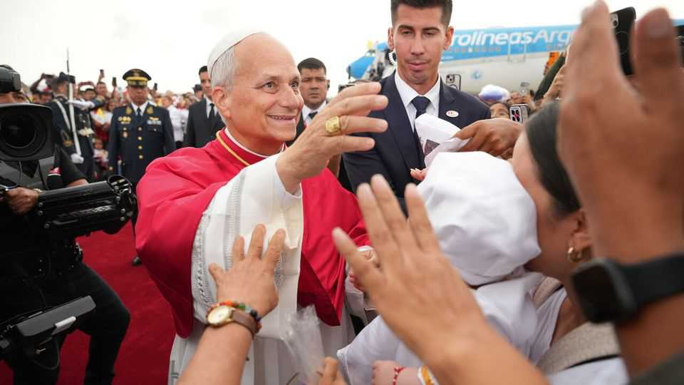

Politics
Nov 12th 2026
Russia and Ukraine held their first peace negotiations in nine months. The talks, brokered by America and held in Abu Dhabi, ended with no big breakthrough, though both sides agreed to swap more prisoners of war. Jared Kushner and Steve Witkoff, Donald Trump’s envoys, then flew to Moscow, to try to persuade Vladimir Putin to include other European countries in future negotiations. They also prepared to meet Volodymyr Zelensky. Ukraine is wary about a meeting between Mr Trump, Mr Putin and Xi Jinping, which Mr Putin is seeking to use to discuss an end to the conflict, but without Mr Zelensky.
France accused Iran’s revolutionary guards of being behind a spate of cyber-attacks on the food-refrigeration systems of big supermarkets. In mid-October the hackers tapped into the supermarkets’ cooling systems, which can be controlled over the internet, damaging goods worth tens of millions of euros and raising concerns about an attack on food security. Jean-Noël Barrot, the French foreign minister, blamed Iran, describing it as an act of “unprecedented aggressiveness”.
In Spain unions held their first national strike in 14 years to protest against the high cost of housing, a big issue in the general election that has been called for November 29th. The ruling Socialists are currently trailing in the polls.
A 24-year-old man shot dead six people in Krakow, Poland’s second-biggest city. He is also suspected of killing his parents and sister. The incident shocked Poland, where gun crime is rare. The perpetrator, who was shot by police and eventually died from his wounds, was described as a loner. It is unclear what his motives were. Ministers suggested he was inspired by far-right ideology, a claim that was disputed by conservatives.
An attempt by a Republican congressman to impeach Pete Hegseth, America’s secretary of war, failed after other Republicans moved to defeat it. Thomas Massie, who lost his primary election in May to a Trumpier candidate, brought several charges against Mr Hegseth relating to the Iran war. Holding a rare press conference, Mr Hegseth defended his record and described the impeachment attempt as a farce. Democrats looked on in glee and vowed to revive the proceedings next year.
Trying to regain the initiative after the Republicans’ stinging defeat in the midterms, Donald Trump appointed Stephen Miller as his new chief of staff. The combative Mr Miller has advised the president on policy during his first and second terms, pushing for harsh immigration measures and deadly strikes against alleged drug-traffickers in the Caribbean, among other things.
Scott Colom was declared the winner in Mississippi’s Senate election, becoming the first black person to represent the state in the Senate since the post-civil-war era. He is also the first Democrat from Mississippi to be elected to the Senate since 1982. Counting continued in Alaska’s close Senate race, where the Democrat holds a narrow lead over the Republican.
Meanwhile, as the Republicans prepare to become the minority party in Congress, Republican senators re-elected John Thune to continue as their leader in the Senate. In the House of Representatives Republicans chose Jim Jordan, a vocal Trump supporter, to lead them. Mike Johnson, the current speaker, decided not to stand.
California’s ballot proposal for a billionaires’ tax appears to have failed, though the result is not yet official. Proposition 40 attracted support from unions and progressives, including Bernie Sanders, a senator from Vermont. It was opposed by Silicon Valley and Gavin Newsom, California’s governor, who said it would cause entrepreneurs to flee the state.
An American soldier was arrested in Britain on suspicion of spying for Russia. He reportedly worked at a NATO base. Meanwhile, American military aircraft were withdrawn from a second air-force base in Britain, according to reports, amid heightened security over a possible attack from Iran. American planes flew out of RAF Mildenhall and relocated elsewhere. In September American bombers were redeployed from RAF Fairford because of a potential Iranian plot. America’s Justice Department has laid charges against three alleged operatives for Iran, including in that case.
China’s carbon emissions fell by 3.1% year on year in the third quarter, the biggest quarterly decline since the covid pandemic. The Centre for Research on Energy and Clean Air, a Finnish think-tank, said lower coal and oil consumption helped bring emissions for the first nine months down by 0.5%.
Gibran Rakabuming Raka submitted his resignation as vice-president of Indonesia, following court rulings that there was no evidence of his graduating from high school, and he was thus ineligible to stand in the 2024 election. Mr Gibran is the son of Joko Widodo, known as Jokowi, who was president until 2024. Relations between Jokowi and the current president, Prabowo Subianto, have soured amid claims that Jokowi’s allies in the administration wiretapped Mr Prabowo’s phone.
In Bangladesh supporters of Sheikh Hasina clashed with police. The former prime minister fled the country in 2024 amid widespread protests. She lives in exile in India but wants to return to Bangladesh in December, even though she has been sentenced to death in absentia for her brutal crackdown on the protesters. The Bangladeshi government refuses to issue her a passport.
There was no clear winner in New Zealand’s election. The final results will not be announced until the end of the month, but Christopher Luxon, the centre-right prime minister and leader of the National Party, is talking to the centrist Opportunity Party about joining his coalition.
Isaac Herzog, Israel’s president, asked Gadi Eisenkot, the leader of the centrist Yashar party, to form a new government. A majority of members in the newly elected Knesset endorsed Mr Eisenkot, but the opposition parties did not agree on the composition of the new coalition. Mr Eisenkot indicated that he wanted to form a minority “emergency” government, without either Arab or ultra-Orthodox parties. He will have up to six weeks to convince his partners.
Seasonal flooding swamped Gaza, drenching the tents of around 350,000 people. In unusual criticism, Donald Trump’s Board of Peace warned Israeli politicians that aid provisions are “insufficient” and urged them to let more supplies into the strip.
Paraguay’s parliament removed Santiago Peña as president amid a scandal that led to the collapse of a popular bank and caused the head of the central bank to step down. Mr Peña, who had offered to resign, was placed under house arrest amid allegations that he used his influence to direct government work towards the bank; Mr Peña used to hold shares in a company tied to it. He denies any wrongdoing.

Pope Leo visited Latin America, just a month after cancer surgery. The pontiff started off in Uruguay and then headed to Argentina, where 2.5m people attended one mass. In a televised address attended by Javier Milei, the pope criticised the president’s austerity programme because of its impact on the poor. He then went to Peru, where he worked for over 20 years as a missionary before taking the top job in the Vatican. At least 3m people turned out to greet him in what he describes as his homeland.